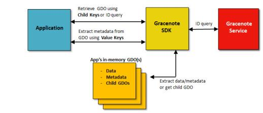

The primary goal of any GNSDK for Mobile application is to recognize media elements and access their metadata. When an application performs a query, Gracenote returns metadata about the target query element, such as the title and genre of an album element. In addition, information about the query operation is returned, such as its timestamp, the start and end range of the query results, and the number of additional results available from Gracenote.
GNSDK for Mobile stores the information returned by a query within containers known as Gracenote Data Objects (GDOs). The contents of a GDO depends on:
A GDO can contain values and/or other, related GDOs. GDOs have two purposes: Containers to access metadata returned from Gracenote, and as input to queries to retrieve additional metadata and other GDOs.
GDOs facilitate a key feature of GNSDK for Mobile – interoperability between all of the Gracenote products and services. Results from one Gracenote query can be used as an input for another. For example, a MusicID result can immediately be used as an input for the Link module without the need for any application intervention. This interoperability is possible for nearly all combinations of Gracenote Services.
Every GDO has a type. For example, when an application performs a query to identify an Album, Gracenote returns a GDO of type Album. Therefore, for most applications, you can infer a GDO’s type based on the target element of the query and knowing the underlying data model for the element.
If needed, your application can get the type of a GDO. For example, your application might request a GDO’s type to confirm it matches the intended type.
Another use case is analyzing the results of a general text lookup. This kind of query can return multiple GDOs of different types. The application needs to process the results to determine which GDO is the best response to the query.
It is important to note that every identification query returns a response GDO. A response GDO is a higher-level GDO typically containing these fields (from album response GDO):
As noted, a response GDO contains references to 0-n matches encapsulated in child GDOs. A child GDO is just like any other GDO once it is retrieved. It is not dependent on its parent GDO and has the same behaviors and features of other GDOs. The fact that it was once a child of another GDO does not matter.
For example, an Album response GDO can contain child GDOs of type Track, or Artist, other Albums, and so on. A child GDO can contain its own child GDOs, such as Tracks, Artists, or Contributors, and so on.
A GDO’s child objects are enumerated with an ordinal index, starting from 1 (not 0) for the first child object. Queries for child objects take this index as input.
To extract metadata from a GDO, or get a child GDO, your application must use defined keys. There are two kinds of keys: Value and Child.

A response GDO from a query can return 0-n matches (child GDOs). These child GDOs can contain either full or partial metadata results. A partial result is a subset of the full metadata available, but enough to perform additional processing. One common use case is to present a subset of the partial results (for example, album titles) to the end user to make a selection. Once a selection is made, you can then do a secondary query to get the full results (if desired).
Note that, in many cases, the data contained in a partial result is more than enough for most users and applications. For a list of values returned in a partial result, see the Data Model in the GNSDK for Mobile C API Reference.
Applications that have an online connection can query Gracenote for information. Applications without an online connection, such as embedded applications used for stereo head units in cars, can instead query a Gracenote local database.
In general, local database queries return full GDO results, even when the response contains multiple matches.
Some online queries return partial GDO results containing just enough information to identify the matches. Using this information, the application can perform additional queries to obtain more information. In general, your application should always test GDO results to determine they are full or partial.
When your application makes an identification query, Gracenote returns a response GDO with one of the following:
In all cases, Gracenote returns high-confidence results based on the identification criteria. However, even high-confidence results could require additional decisions from a user.
In such cases, GNSDK for Mobile sets NEEDS_DECISION to true, indicating that the end user should select the the final result. The application should present users with the returned match(es) and allow them to select (or reject) the match.
In general, GDO responses that need a decision by a user are:
GNSDK provides a score (0-100) for text matches (accessible using the GNSDK_GDO_VALUE_TEXT_MATCH_SCORE value key for an Album GDO) based on comparing the input text to the corresponding field in the match text. This score is not an indicator of text match quality.
For example, the result text could be substantially different from the input text because the input text contained a lot of incorrect information. Such a response indicates that the results have an amount of ambiguity that the application must resolve.